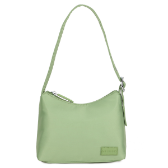
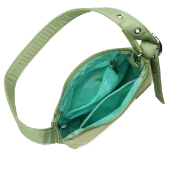
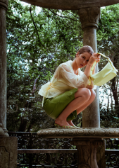
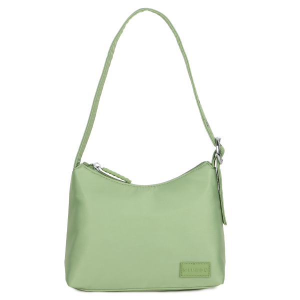
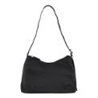
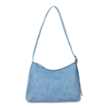
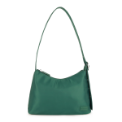

ULRIKKE RECYCLED
€55,92
The ULRIKKE bag is a signature style by SILFEN. Made in recycled nylon
with silver metal hardware. The 90’s shape beautifully combines a
everyday bag with a party look. The single handle is adjustable and
make the bag perfect for shoulder bag or cross-body use. Ulrikke comes
with matching lining and an internal pocket. A must have bag!
The recycled nylon is primarily made of plastic bottles
collected from the oceans all over the world. With this bag you can
both look your best and keep our planet safe a little more.
Material:
100 % rPET (Polyethylenterephthalat)
Dimensions:
30 x 6 x 20 cm
Max. strap length:
80 cm
CHOOSE COLOR


